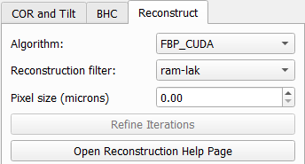
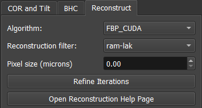
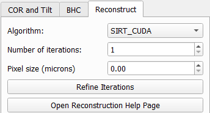
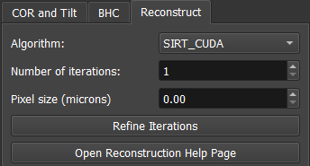
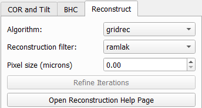
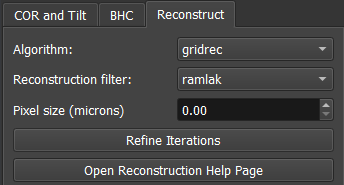
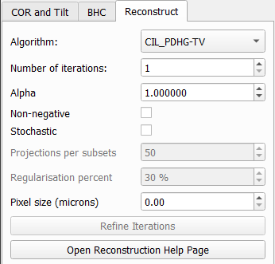
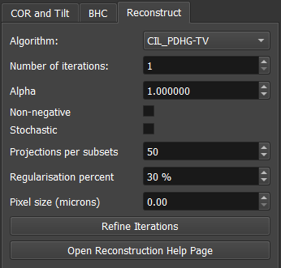
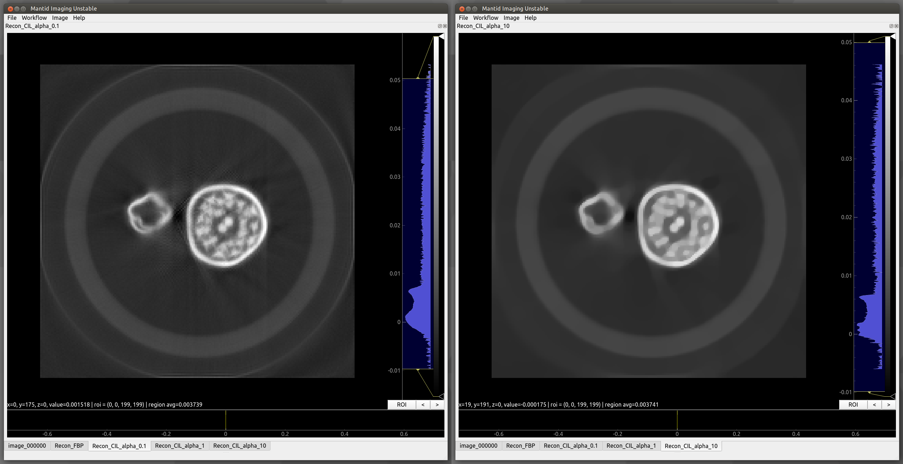

Reconstruction Algorithms#
Overview#
This page gives explanations of different reconstruction algorithms available in Mantid Imaging, including implementation details, hardware requirements, and links to the upstream documentation for the algorithms.
ASTRA Toolbox#
The ASTRA Toolbox provides GPU-accelerated tomographic reconstruction algorithms.
This implementation supports 2D data sets, and requires a CUDA-compatible graphics card to run.
Mantid Imaging automatically creates the required projector and geometry configurations for ASTRA reconstruction workflows.
Parallel beam vector geometry is used, allowing tilt correction to be accounted for through the centres of rotation for each slice. This means manual rotation of the images to correct the tilt shouldn’t be necessary.
Why this matters:
Using a vector-based parallel beam geometry improves reconstruction consistency when small misalignments or sample tilt are present. Instead of requiring users to manually rotate or pre-align projection data, the geometry definition accounts for these offsets during reconstruction. This reduces preprocessing steps and helps avoid reconstruction artefacts caused by imperfect alignment.
The vector creation implementation is adapted from ToMoBAR.
FBP_CUDA#
Overview#
Filtered back projection reconstruction algorithm
Supports multiple reconstruction filters
Requires a CUDA-compatible GPU
How it works#
Filtered Back Projection reconstructs the image by first applying a frequency-domain filter to each projection and then back-projecting the filtered data into image space.
Because it performs a single deterministic computation, it does not iteratively refine the solution or incorporate prior assumptions about the object during reconstruction.
This makes the output strongly dependent on data quality and sampling, rather than on optimisation-based refinement.
When to use FBP_CUDA#
High-quality, well-sampled tomography data
Cases where speed is a priority and iterative reconstruction is not necessary
When classical FBP is preferred for its simplicity and interpretability
FBP_CUDA is most effective when the input data is sufficiently complete that additional refinement is not required.
Interface Preview#
{kind=link}

FBP_CUDA in the reconstruction window (light mode)#
{kind=link}

FBP_CUDA in the reconstruction window (dark mode)#
Parameters#
Parameter |
Description |
|---|---|
Reconstruction filter |
The filter applied during filter back projection. Different filters affect the sharpness and noise characteristics of the reconstruction. For an evaluation of the filters please go to the Reconstruction Filters page. |
Pixel size (microns) |
Defines the physical pixel spacing used to convert image distances into real-world units, ensuring correct scaling of attenuation coefficients (e.g. cm⁻¹). |
SIRT_CUDA#
Overview#
Simultaneous iterative reconstruction technique (SIRT) algorithm
Reconstruction quality is controlled through iteration count
Requires a CUDA-compatible GPU
How it works#
SIRT_CUDA is an iterative reconstruction algorithm. Instead of computing the solution in a single step, it progressively refines the reconstruction over multiple iterations.
SIRT works by repeatedly comparing simulated projections (generated from the current reconstruction estimate) against the measured projection data. The difference between these is used to compute corrections, which are then applied to update the reconstruction. This process is repeated, gradually improving agreement with the measured data over time.
Because of this iterative correction process, reconstruction quality improves with the number of iterations, allowing the algorithm to reduce artefacts and handle noisy or incomplete data more effectively than direct methods such as FBP_CUDA.
When to use SIRT_CUDA#
Noisy or low-dose tomography data
Sparse or limited-angle datasets
Cases where classical FBP produces strong artefacts
When iterative reconstruction is preferred for improved image quality
Interface Preview#
{kind=link}

SIRT_CUDA in the reconstruction window (light mode)#
{kind=link}

SIRT_CUDA in the reconstruction window (dark mode)#
Parameters#
Parameter |
Description |
|---|---|
Number of iterations |
The number of iterations to perform. Higher iteration counts can improve reconstruction quality but will increase computation time. Mantid Imaging provides a refine iterations tool to assist with selecting an appropriate iteration count. |
Pixel size (microns) |
Defines the physical pixel spacing used to convert image distances into real-world units, ensuring correct scaling of attenuation coefficients (e.g. cm⁻¹). |
TomoPy#
gridrec#
Overview#
CPU-based reconstruction algorithm
Does not require CUDA support
Implemented through the TomoPy package
How it works#
Gridrec is a fast Fourier-based reconstruction algorithm. Instead of performing back projection directly in image space, it reconstructs the image by transforming projection data into frequency space using the Fourier slice theorem.
In frequency space, interpolation is used to map the data onto a regular grid, after which an inverse Fourier transform is applied to recover the reconstructed image.
Because this approach operates in the frequency domain, Gridrec is very fast and does not require iterative refinement. However, its performance is more sensitive to sampling quality and interpolation accuracy, which means it works best with well-sampled, evenly spaced projection data.
Gridrec performs efficiently on CPUs because it relies on Fast Fourier Transform (FFT) operations, which are highly optimised in CPU libraries and do not require iterative computation.
Unlike GPU-based iterative methods such as FBP_CUDA or SIRT_CUDA, Gridrec does not gain additional benefit from massively parallel update steps. Its performance instead comes from efficient frequency-domain transforms, making it a lightweight and fast option for suitable datasets.
When to use gridrec#
When GPU resources are not available
For smaller datasets where CPU reconstruction is sufficient
Interface Preview#
{kind=link}

gridrec in the reconstruction window (light mode)#
{kind=link}

gridrec in the reconstruction window (dark mode)#
Parameters#
Parameter |
Description |
|---|---|
Reconstruction filter |
The filter applied during gridrec. Different filters affect the sharpness and noise characteristics of the reconstruction. For an evaluation of the filters please go to the Reconstruction Filters page. |
Pixel size (microns) |
Defines the physical pixel spacing used to convert image distances into real-world units, ensuring correct scaling of attenuation coefficients (e.g. cm⁻¹). |
References#
Dowd BA, Campbell GH, Marr RB, Nagarkar VV, Tipnis SV, Axe L, and Siddons DP. Developments in synchrotron x-ray computed microtomography at the national synchrotron light source. In Proc. SPIE, volume 3772, 224–236. 1999.
Rivers ML. Tomorecon: high-speed tomography reconstruction on workstations using multi-threading. In Proc. SPIE, volume 8506, 85060U–85060U–13. 2012.
Core Imaging Library#
The Core Imaging Library (CIL) is an open-source Python framework for tomographic imaging with particular emphasis on reconstruction of challenging datasets.
PDHG-TV#
Overview#
Primal Dual Hybrid Gradient (PDHG) optimiser
Total Variation (TV) regularised reconstruction method
Iterative algorithm designed for noise suppression and sparse/noisy data
Typically produces smoother reconstructions with edge preservation
How it works#
PDHG-TV is an iterative optimisation-based reconstruction method that solves the reconstruction problem by minimising an objective function rather than directly computing the solution.
It uses the Primal-Dual Hybrid Gradient (PDHG) algorithm to alternately update the reconstruction and the optimisation variables. At each iteration, the current estimate is compared against the measured projection data, and corrections are applied to reduce the mismatch while also enforcing regularisation constraints.
A key component of PDHG-TV is Total Variation (TV) regularisation. This encourages the reconstruction to remain smooth in uniform regions while preserving sharp edges. As a result, noise and artefacts are reduced without excessively blurring structural boundaries.
Because PDHG-TV explicitly incorporates both data fidelity (matching the measured projections) and regularisation (controlling image smoothness), it is more flexible than direct methods such as FBP_CUDA and more noise-robust than simpler iterative methods such as SIRT_CUDA, at the cost of increased computational complexity and parameter tuning.
When to use PDHG-TV#
Noisy or low-dose tomography data
Sparse or limited-angle datasets
Cases where classical FBP produces strong artefacts
When edge-preserving smoothing is required
Interface Preview#
{kind=link}

PDHG-TV in the reconstruction window (light mode)#
{kind=link}

PDHG-TV in the reconstruction window (dark mode)#
Parameters#
Parameter |
Description |
|---|---|
Number of iterations |
The number of iterations to perform. Higher iteration counts can improve reconstruction quality but will increase computation time. |
Alpha (regularisation parameter) |
Controls the strength of the TV regularisation. Higher alpha values lead to smoother reconstructions with stronger edge preservation, while lower alpha values allow more noise but can preserve finer details. |
Non-negativity constraint |
Enforces reconstructed values to be greater than or equal to zero. Negative values are projected to zero during the optimisation process. This is often appropriate for physical quantities such as attenuation in absorption tomography. |
Stochastic |
Enables a stochastic variant of the PDHG optimisation algorithm (SPDHG). Instead of using the full dataset at each iteration, the algorithm operates on randomly selected subsets of data. This reduces the computational cost per iteration, which can improve performance for large datasets. However, it may require more iterations to converge compared to the full (deterministic) version. |
Projections per subset |
When stochastic is enabled, this parameter specifies the number of projections to include in each randomly selected subset. A smaller number of projections per subset can lead to faster iterations but may increase the total number of iterations needed for convergence. |
Regularisation percent |
When stochastic is enabled, this parameter specifies the percentage of the total number of projections to include in each subset for regularisation. This allows the regularisation step to be performed on a representative subset of the data, which can help maintain reconstruction quality while reducing computational cost. |
Pixel size (microns) |
Defines the physical pixel spacing used to convert image distances into real-world units, ensuring correct scaling of attenuation coefficients (e.g. cm⁻¹). |
Example#
The figure shows two values of alpha applied to a reconstructed slice.
{kind=link}

PDHG-TV with alpha=0.1 on the left and alpha=10 on the right#
Jørgensen JS et al. 2021 Core Imaging Library Part I: a versatile python framework for tomographic imaging. Phil. Trans. R. Soc. A 20200192. Code.
Reconstruction Methods Comparison#
Method |
Type |
Compute |
Strengths |
Best suited for |
|---|---|---|---|---|
FBP_CUDA |
Direct (FBP) |
GPU |
Very fast, deterministic, simple |
Well-sampled, low-noise data |
SIRT_CUDA |
Iterative (algebraic) |
GPU |
Robust to noise, handles missing data better than FBP |
Noisy or limited-angle datasets |
Gridrec |
Fourier-based |
CPU |
Very fast FFT-based reconstruction |
Well-sampled datasets without GPU access |
PDHG-TV |
Iterative (optimisation) |
GPU |
Strong noise suppression, edge-preserving reconstruction |
Very noisy, sparse, or artefact-heavy data |